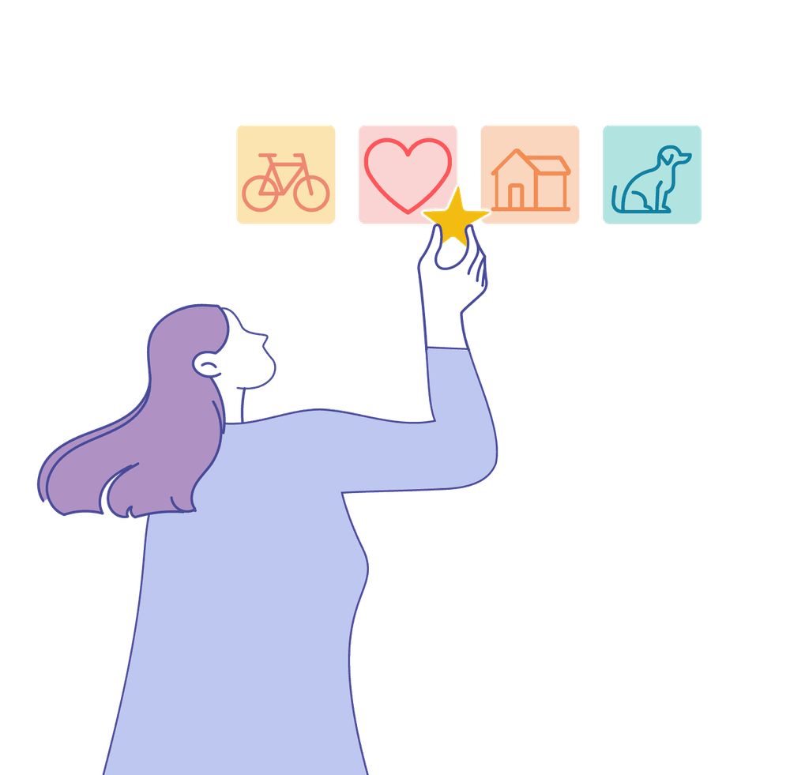

Mit der Academy erhaltet ihr im Business-Plan praxisnahe Lernmodule rund um Facilitation und wirksame Transformation.
Gemeinsam mit 9 Spaces zeigt Plan International Deutschland, wie wertebasiertes Arbeiten Orientierung gibt – nach innen wie nach außen.

Dieses Tool hilft dir, regelmäßig Prioritäten zu reflektieren und sie in Verhalten zu übersetzen.
Ein Tool, das dir dabei hilft, dein ganzes produktives Leben zu überblicken und dich danach auszurichten.
Dieses Tool hilft euch dabei, strategische Vorhaben in Projekte zu übersetzen und diese auch sofort zu priorisieren.
Viele Teams verfolgen zu viele Prioritäten. Dieses Tool hilft dir dabei, mutiger auszusieben.